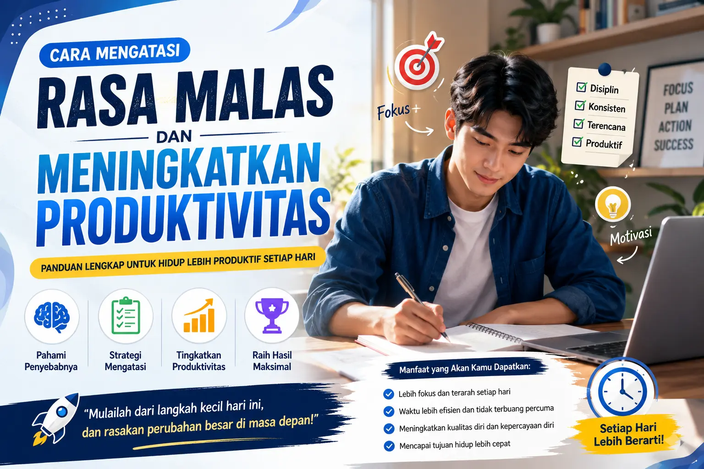
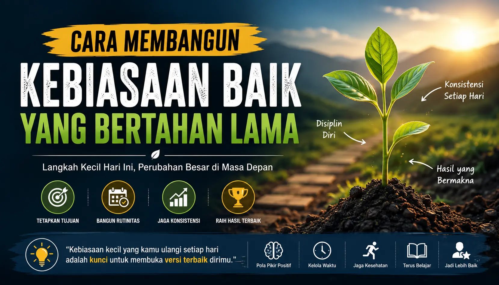
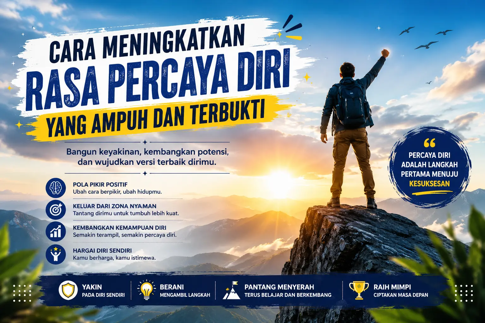
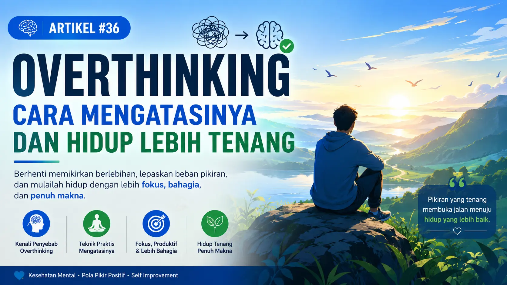

📰 Artikel Terbaru
Cara Meningkatkan Kepercayaan Diri dalam Kehidupan Sehari-hari: Panduan Lengkap untuk Menjadi Lebih Percaya Diri
Panduan lengkap membangun kepercayaan diri dengan tips praktis yang mudah diterapkan. Pelajari penyebab minder, manfaat percaya diri, serta kebiasaan positif agar lebih yakin menghadapi tantangan hidup.

Cara Mengatasi Rasa Malas dan Menjadi Lebih Produktif Setiap Hari
Pelajari cara mengatasi rasa malas dengan langkah yang efektif agar lebih produktif setiap hari. Lengkap dengan tips, kebiasaan positif, dan strategi yang mudah diterapkan.

Cara Membangun Kebiasaan Baik yang Bertahan Lama: Panduan Lengkap untuk Mengubah Hidup Menjadi Lebih Positif
Pelajari cara membangun kebiasaan baik yang bertahan lama dengan langkah-langkah praktis dan mudah diterapkan. Temukan tips membentuk rutinitas positif, menghilangkan kebiasaan buruk, serta menjaga konsistensi agar tujuan hidup lebih mudah tercapai.

Cara Meningkatkan Rasa Percaya Diri: Panduan Lengkap untuk Menjadi Lebih Yakin pada Diri Sendiri
Pelajari cara meningkatkan rasa percaya diri melalui kebiasaan positif, pola pikir yang sehat, dan langkah praktis agar lebih yakin menghadapi tantangan dalam kehidupan sehari-hari.

Overthinking: Penyebab, Dampak, dan Cara Menghentikan Pikiran Berlebihan
Pelajari penyebab overthinking, dampaknya bagi kesehatan mental, serta cara mengatasinya dengan langkah-langkah praktis agar hidup lebih tenang dan produktif.